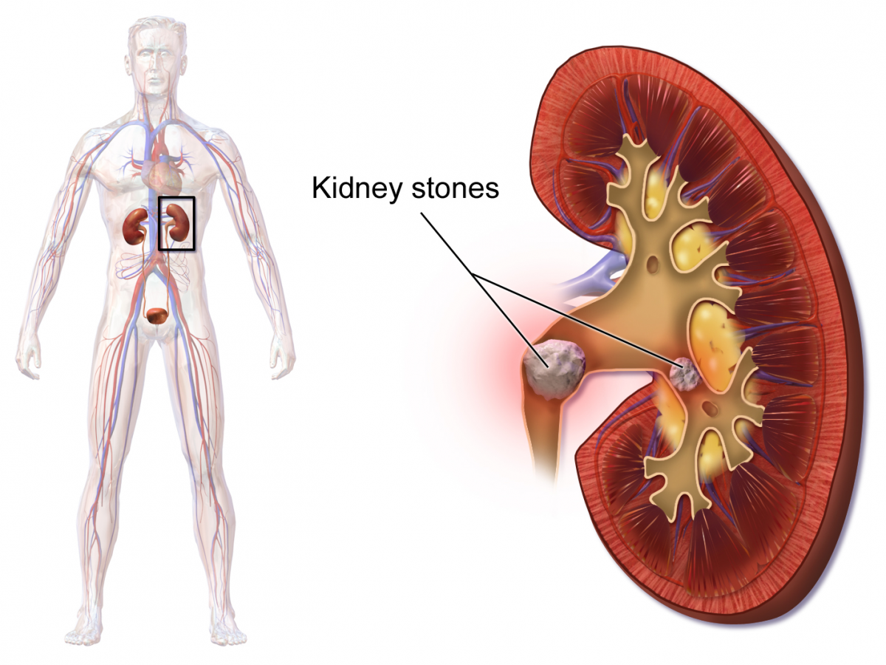
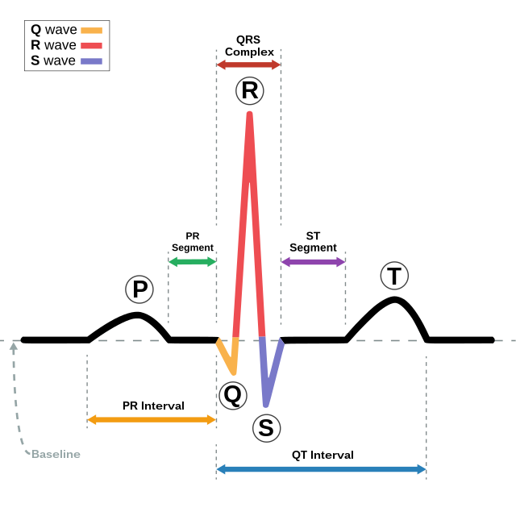
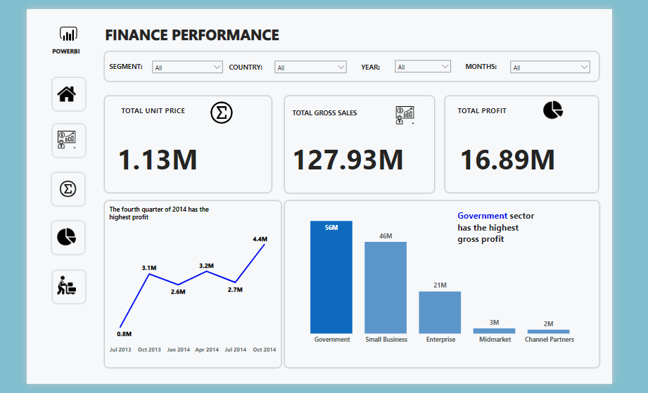
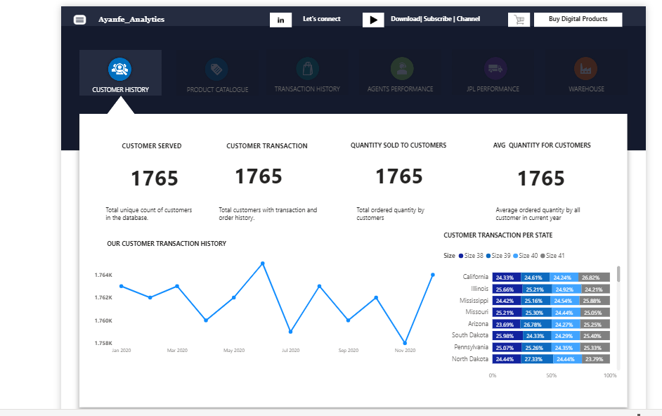
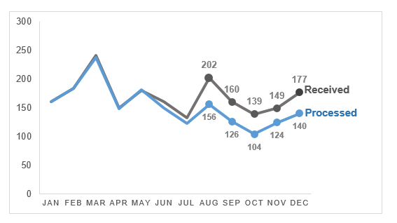
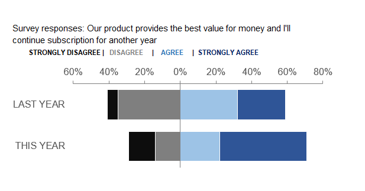
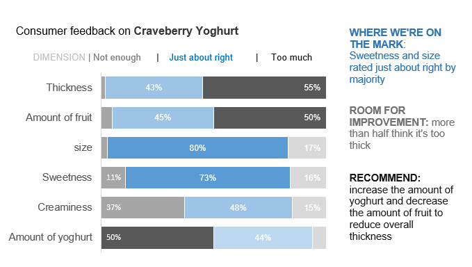

Using Ames dataset from Kaggle, I performed data cleaning, exploratory data analysis and predictive analysis by building a model to predict the price of houses based on some given features


Customer segmentation helps to learn more about the customers on a deeper level and content can be tailored made specifically to the segmented groups. In this project I performed explorative data analysis and segmented customer based on their income and spending score using K-means clustering

Simpon's paradox occurs when trends appear in subgroups but disappear or reverse when subgroups are combined. In this project, two methods of kidney stones were compared and Simpson's paradox was unravelled using multiple regession and other statistical methods using R-programming language
Heart disease is the leading cause of death for most racial and ethnic groups in the US. This projects aims at performing exploratory data analysis, examined factors that predisposes one to having heart disease and build a model for predicting heart disease
Nobel prize is a prestigious prize given to those who during the preceeding year have confirmed the greatest benefit to humankind. This project look at the Nobel prize trends, examines the proportion of males and females who have won the award, check the country with the highest recipients of the award and answer many other questions using statistical analysis in R-programming

Anomaly detection is a method of finding and identifying outliers. Many times, all the possible deviations from a dataset can not be modelled using machine learning, hence the algorithms learn only the good patterns and treat any other as outliers. This is employed in the project, the good patterns in the ECG are learnt and deviations from it is treated as an outlier.
Childbed fever is a disease that affects women that have just given birth. It was rampant in Vienna, Dr Ignaz Semmeleis was perplexed by it and through good record keeping, comparing the mortality recorded in two separate clinics, he discovered what was responsible for the different mortalities recorded - hand washing

Created an interactive dashboard by choosing the right visualization, eliminating clusters, focus the readers attention and good of colors

Created an interactive dashboard by choosing the right visualization, eliminating clusters, focus the readers attention and good of colors

Ticket sales analysis and visualizations using line graph in microsoft excel

Survey responses using Diverging barchart in excel

Analysis of customers response to a questionnaire on craveberry drink using horizontal stacked barcharts

I performed exploratory data analysis and compared the life expectancy between Africa and Europe; America, Europe and Asia to see if there are significant differences among them using R-programming